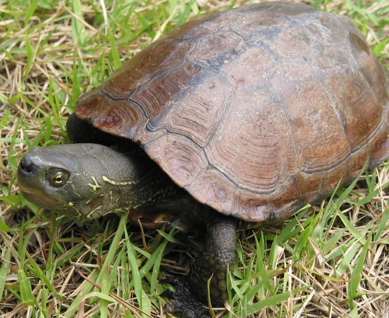

남생이

주요특징 및 설명
종명: 남생이(Reeve's Turtle)
학명: Mauremys reevesii
생물학적 분류: 거북목 남생이과
분포: 한국 · 일본 · 중국의 민물가
등급: 멸종위기종 Ⅱ급, 천연기념물 제453호
크기: 등딱지 길이 20~25Cm
주요 특징
갈색의 단단한 등딱지에 세로 도드라기가 있어 붉은귀거북과 잘 가려진다. 우리나라 민물거북 중 등딱지가 가장 단단해서 수달 같은 동물들이 쉽게 먹을 수 없다.